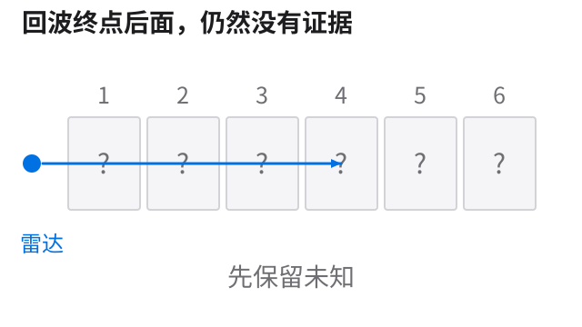
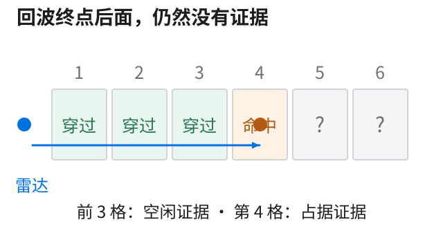
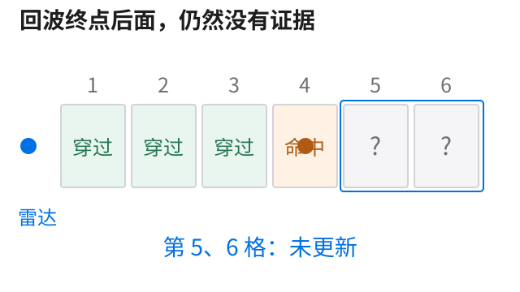

拿手电筒照向书柜，光线可以穿过你与柜子之间的空气，到柜门处停住。柜子背后有没有一把椅子，从眼前这个角度看不出来。在三维地图上，这三处看似简单的区别决定了哪些结论有观测依据。
从四个格子理解一条测量
先画一排编号为 1 到 6 的方格，把传感器放在第 1 格左边。假设测到某个物体表面，射线穿过前 3 格，停在第 4 格内部。对这一次有效回波，前 3 格获得空闲证据，第 4 格获得占据证据，第 5 和 6 格没有收到更新。这里的空闲表示测量光束经过了相关位置；分辨率有限时，同一个格子中仍可能存在比格子更细的物体。
跟着一条射线给六个格子做记录
将三维体素暂时画成一排六格。雷达在左侧，第4格有一个能产生有效回波的表面。只跟踪这一条射线，观察“没有障碍点”到底能说明多少。

尚未观察的空间
查看大图
问号表示尚没有观测证据，不表示那里一定空着。传感器发出一条射线，只有得到具有明确语义的有效测量后，才能判断哪些格被穿过、哪一格被命中。把所有没有点的格子直接涂成可走空间，会把遮挡与空闲混为一谈。

记录穿过与命中
查看大图
这次有效回波停在第4格。射线经过第1、2、3格，给它们空闲证据；终点所在的第4格得到占据证据。地图可以据此更新各格的占据概率。这里画的是证据方向，不意味着一次测量就能百分之百确定每格内容。

保留遮挡后的未知
查看大图
第4格里的物体挡住了视线，第5、6格没有被这次射线穿过，也没有被命中，因此保持原状态。若它们此前从未被观察，就仍是未知。想知道后面能否通行，需要换个观察位置；增加同一方向上的重复回波并不会穿透遮挡。
自由、占据、未知描述的是不同证据状态。只有表面点而没有测量原点和射线，很难完整还原前方空闲空间。
小练习：射线命中第2格，哪些格可以从这次测量获得空闲证据？
只有射线在终点前穿过的第1格。第2格获得命中证据，第3至6格不因这次测量而更新。
实际三维空间中的小格子称为体素。用同样尺寸的小格铺满整栋建筑会浪费内存。八叉树在需要细分时把一个立方体分成八个子立方体；满足条件的同类区域可以在较粗层级表示。OctoMap 用这种结构记录占据概率，未探索的空间也能保留为未知。

从二维格纸折到三维八叉树
在平面上把一张方纸横竖各对折一次，得到四个小方块。把同样的操作放进立方体，再沿高度方向分成两层，就有 2 × 2 × 2 = 8 个小立方体。这是八叉树中“八”的来历。若初始立方体边长 4 米，细分两层，最小格的边长为 1 米；再细分一次便是 0.5 米。
辨认一根很细的栏杆时，过粗的体素会把杆和旁边的空隙混在一起；体素很小时，同样多的射线只能覆盖其中一小部分。每个方向的分辨率都提高一倍时，同一立方区域细格的最大数量变为原来的八倍。八叉树可以利用稀疏与同质区域节省存储，但分辨率与观测密度的权衡依然存在。
一次命中为什么只算一份证据
现实中的回波有噪声，物体也会移动。某格昨天有一把椅子，今天射线却穿过原处并命中后墙。两次观测给它提供的是方向相反的证据。概率占据模型允许估计值逐次变化，再用阈值决定当前是否按占据处理。
可以用赔率体会更新。设教学模型让初始占据概率为 0.5，也就是占据与空闲的赔率为 1。若一次命中让赔率乘 3，得到 3，对应概率 3/4。随后一次穿过让赔率乘 1/2，得到 1.5，对应概率 1.5/2.5 = 0.6。这些倍数只是帮助计算的假设，实际传感器模型和上下限应依具体数据设定。真实无观测区域也可由尚未分配的节点表示。
只有点的位置时会丢掉什么
导出一份仅含障碍表面点的文件，相当于只保留了刚才图上的第 4 格。如果不知道传感器原点与姿态，就难以判断这个表面是从左侧还是右侧测到，前 3 格的自由证据也无法完整重建。同一片空白既可能是视线经过的通道，也可能是被柜子挡住的区域。
把传感器移到柜子侧面，再画第二条射线。此前看不到的一部分地面现在能被观测，其余仍被挡住。给地图添加“墙”“桌子”等语义标签时，可以把类别挂在已观测的表面上。若标注一个疑似坑洞，把看得见的边界和没有测到的底部分别记录，便不会把人工猜测混成传感器测量。
从概率读出地图时还少了一个选择
设前面的教学例子给出 0.6 的占据概率。如果使用 0.5 的阈值，这个已经观测过的体素会被当作占据；若应用使用更高阈值，它可能尚未达到确认占据的条件。应明确分类规则怎样处理已观测但不确定的体素。把根本未分配的空间与反复观测后仍有冲突的空间分开，有利于后续决定去哪里补测。
无有效回波也需要读传感器文档。超过有效量程、反光导致失效、完全没有发布测量，会在设备里以不同方式表达。只有数据语义真实支持“这段射线可视为空闲”时，才应将它用于清除。由无效深度构造一个虚拟远端点，可能在未知区域误画出一条空走廊。